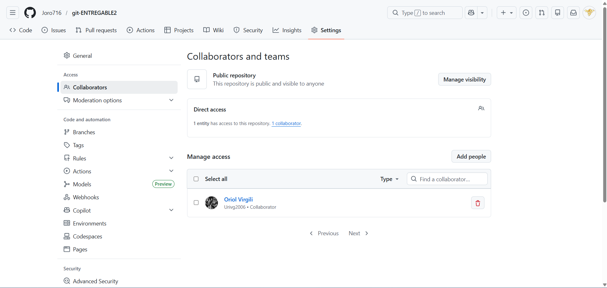
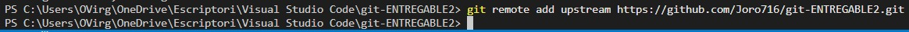
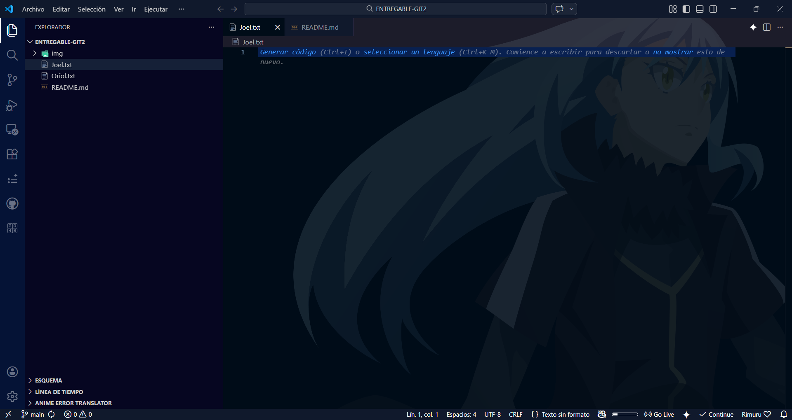
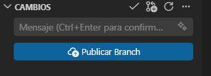
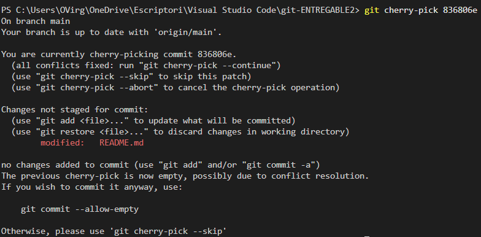

GIT - ENTREGABLE 2: Flujo de Trabajo Colaborativo
Asignatura: Digitalización aplicada a los sectores productivos
Curso: 2024-2025 - DAM1A (Institut F. Vidal i Barraquer)
Grupo: Joel i Oriol
Integrantes:
- Joel - Maintainer (Propietario del repo central)
- Oriol - Contributor (Realiza el Fork)
1. Configuración básica del Forking Workflow
El objetivo es establecer la conexión entre los repositorios Local, Origin (fork) y Upstream (central).

Captura 1: Configuración de acceso y colaboradores en GitHub.

Captura 2: Configuración del remoto upstream en la terminal local.
2. Compartir trabajo y sincronización
Se crean archivos identificativos y se integran mediante Pull Requests.
 Captura 3: Pull Request enviado desde el fork hacia el repositorio central.
Captura 3: Pull Request enviado desde el fork hacia el repositorio central.

Captura 4: Sincronización final con los archivos de ambos integrantes.
3. Generación de conflictos de merge
Resolución manual de ediciones simultáneas en la misma línea de un archivo.
 Captura 5: Interfaz de VS Code para la resolución de conflictos.
Captura 5: Interfaz de VS Code para la resolución de conflictos.
4. Flujo de trabajo con ramas (branches)
Uso de la rama feature-docs para aislar el desarrollo de documentación.

Captura 6: Publicación de la rama en el repositorio remoto.
5. Uso de etiquetas (tags) e historial
Marcado de la entrega final con v1.0-entrega y visualización del historial gráfico.
 Captura 7: Historial de commits con ramas fusionadas y etiqueta de versión.
Captura 7: Historial de commits con ramas fusionadas y etiqueta de versión.
6. Técnicas avanzadas: Cherry-picking
Copia de un commit específico entre ramas sin fusionarlas por completo.

Captura 8: Aplicación del comando cherry-pick en la terminal.